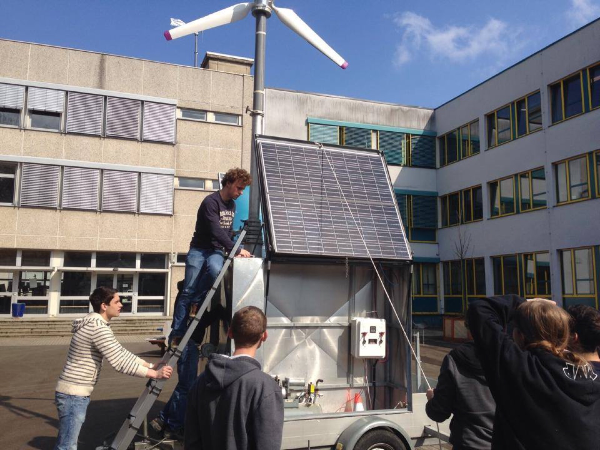
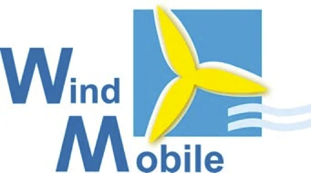
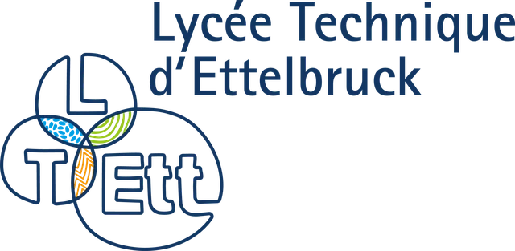
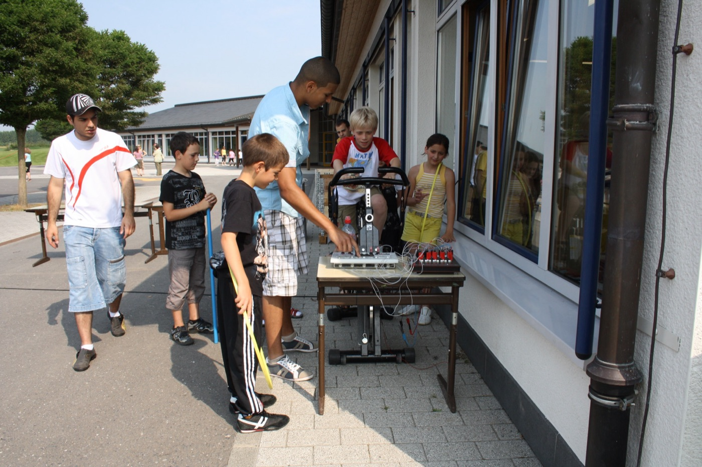
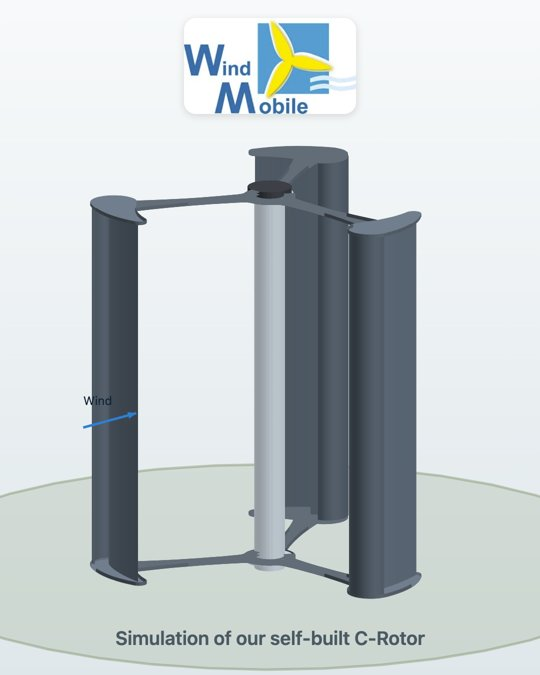
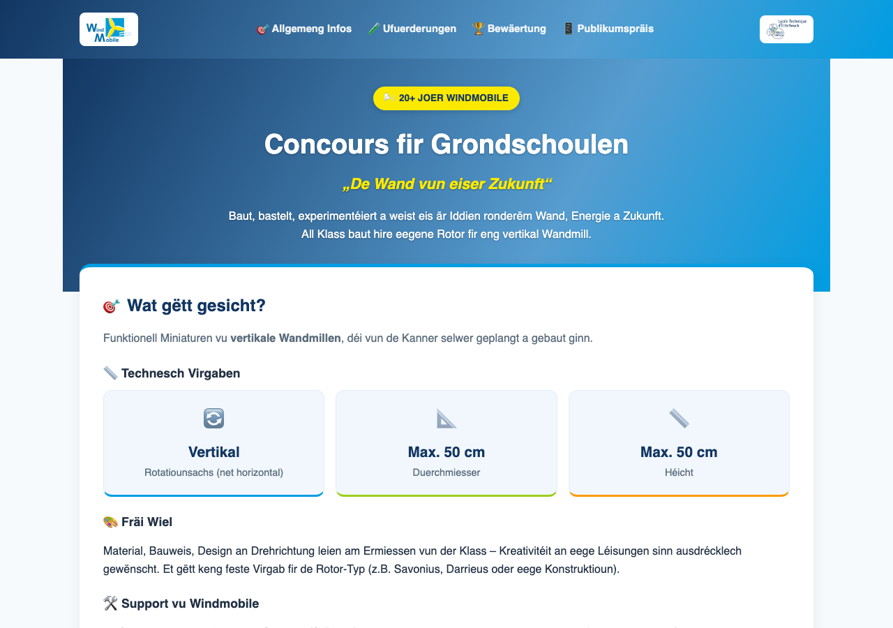

20+ Joer Windmobile
„De Wand vun eiser Zukunft“
Reunioun Nordstad · Ierpeldeng-Sauer · 30. November 2026

Atelier an enger Grondschoul (Archiv Windmobile)
Windmobile @ LTEtt · Concours fir Grondschoulen · 2
„Mir bauen d’Zukunft mam Wand.“ D’Kanner entdecke Wandenergie, Technik, Kreativitéit, Nohaltegkeet an Teamwork.
Grondschoulklassen aus der Regioun,
Cycle 3 a 4
Dikrech · Ettelbréck · Ierpeldeng-Sauer
Colmer-Bierg · Schieren
Bettenduerf (mat Gilsdref)
Windmobile @ LTEtt · Concours fir Grondschoulen · 3

Beispill: eise selwer gebaute C-Rotor
Windmobile @ LTEtt · Concours fir Grondschoulen · 4
| Krittär | Punkten | Wat gëtt bewäert? |
|---|---|---|
| Technesche Bau | 25 | Stabilitéit an Ëmsetzung vu Rotor an Achs |
| Technesche Versuch | 20 | Start-Wandgeschwindegkeet an Dréizuel bei 8 m/s (jee 10 Punkten, am Verglach mat deenen anere Klassen) |
| Kreativitéit | 20 | eegen Iddie beim Rotortyp, Material an Design |
| Presentatioun a Froen | 20 | Rotorwiel, Dréiung a Materialien erklären |
| Kuerzfilm | 15 | kloer Duerstellung vun der Planung an dem Bau |
| Total (Jury) | 100 |
Windmobile @ LTEtt · Concours fir Grondschoulen · 5
Grousse Wandmillen-Workshop
Ofstëmmung iwwer Instagram iwwer d’Kuerzfilmer vun de Klassen
Windmobile @ LTEtt · Concours fir Grondschoulen · 6
| Wéini | Wat |
|---|---|
| nach festzeleeën | Offizielle Start an Ukënnegung an de Schoulen (geplangt war September 2026) |
| bis Mäerz 2027 | Aarbecht an de Klassen |
| Mäerz 2027 | Ofgi vun de Projeten, Jury an Auswiel vum Gewënner |
| Fréijoer 2027 | Wandmillen-Workshop fir d’Gewënnerklass |
Windmobile @ LTEtt · Concours fir Grondschoulen · 7

Windmobile @ LTEtt · Concours fir Grondschoulen · 8
Merci! Mir freeën eis op Är Froen an Iddien.
Windmobile @ LTEtt · Concours fir Grondschoulen · 9
20+ Joer Windmobile
„De Wand vun eiser Zukunft“
Reunioun Nordstad · Ierpeldeng-Sauer · 30. November 2026